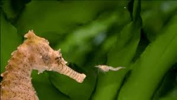
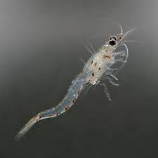

Seahorse Diet
Home
A Seahorse's Life Cycle
Species
Diet
Endangered Species
Sources


- Seahorses have no teeth, so they must swallow their food whole
- They also have tiny mouths since they are tiny
- They feed on small fish, plankton, and small crustaceans, including shrimp and copepods
- Above is a picture of a mysis shrimp, a tasty snack for a seahorse
- Pictured to the right is a seahorse about to devour a mysis shrimp
- Adult seahorses will eat between 30 and 50 times each day
- The fry eat up to 3000 pieces of food a day
Home